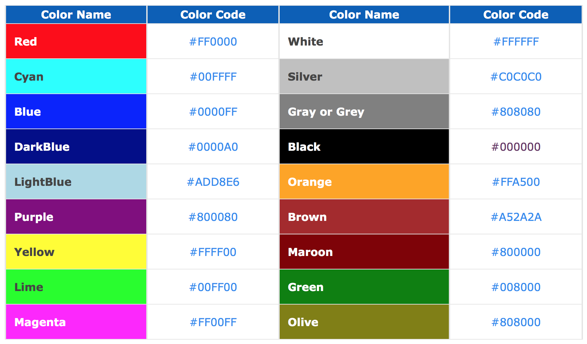
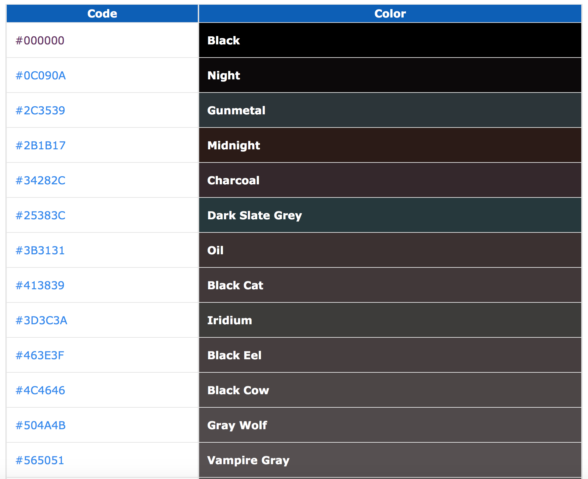

Below are some of the common color names and codes. With these colors, you can also use the color name. For example, in HTML tags and CSS that use color codes, you could use "red" instead of "#FF0000".
HTML color codes are hexadecimal triplets representing the colors red, green, and blue (#RRGGBB). For example, in the color red, the color code is #FF0000, which is '255' red, '0' green, and '0' blue. These color codes can be used to change the color of the background, text, and tables on a web page.
Below is an HTML color code picker script that resembles the Adobe Photoshop color picker. Using this online tool you can select the color you want to use in your web page or blog. Your browser must have JavaScript enabled to use this tool.
Blacks - Grays
and so on...